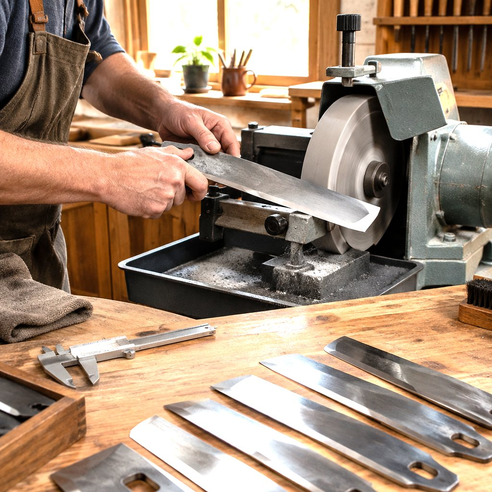
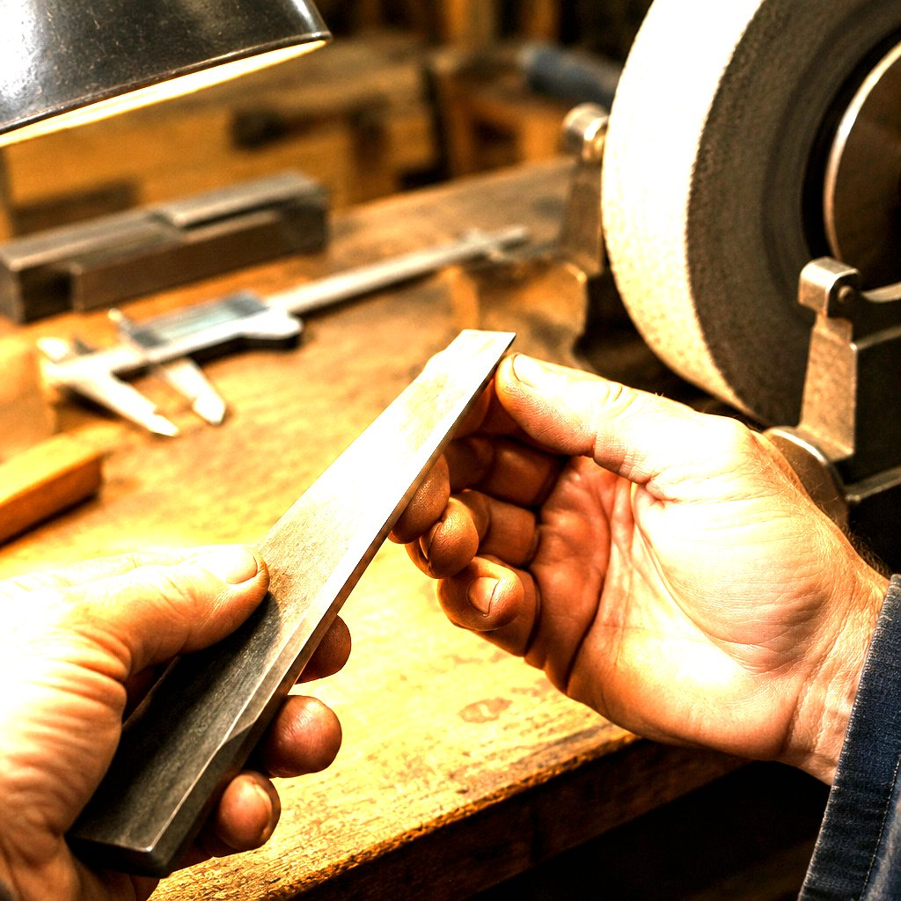

Заточка деревообрабатывающего инструмента
Строгальные ножи, дисковые пилы, фрезы, цепи, свёрла и стамески. Затачиваем геометрию, а не просто «подправляем кромку»: инструмент должен резать, а не гореть.
Что затачиваем
Список с поиском: начните вводить название — останется то, что нужно.
Частые работы
Строгальные ножи
Прямые и профильные, включая ножевые валы: важна одинаковая ширина в наборе.
Дисковые пилы
Твердосплавные напайки, профиль зуба под материал.
Фрезы
Концевые, кромочные, профильные и для ЧПУ.
Цепи пильные
Шаг и профиль зуба под вашу шину.
Свёрла и стамески
Форстнера, перьевые, спиральные, долота.
Ножи рубанков
Электрорубанок и ручной: парами, с одинаковым вылетом.
Кромка и геометрия

После заточки проверяем кромку и угол: если нож «ведёт» или инструмент греется, дело не в станке, а в геометрии. Это видно сразу.
Частые вопросы
Нужно заточить инструмент?
Позвоните на любой из двух номеров: скажите, что заточить и сколько штук — ответим по срокам и стоимости.